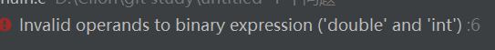
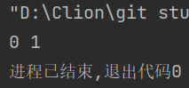
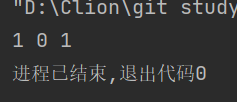
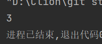
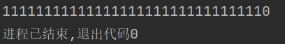
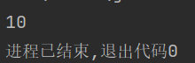
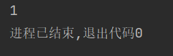
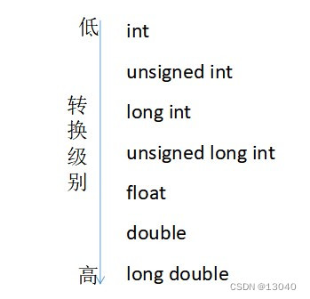
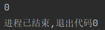

C extension Learning （1） 位运算符，逻辑运算符和简单应用
C语言扩展1：
位运算符与逻辑运算符
位运算符
前导
C语言中的位运算符有下面几个：
1）与 ： &;
2）或：|；
3）异或： ^;
4）取反 ：~;
5）左移 :<< ;
6）右移： >> ;
范例：
#include<stdio.h>
int main()
{
int a = 0b1001; // 二进制写法：十进制下是：9
int b = 0b0011; // 二进制写法：十进制下是：3
int and_res = a & b; //与
int or_res = a | b; //或
int xor_res = a^b; //异或
int opp_res_a = ~a; //取反
int leftMoveRes = a << 1; // 左移一位 得到的结果应当是 0b10010 (18)
int rightMovRes = a >> 1; // 右移一位 得到的结果应当是 0b00100 (4)
} 注意：这样的一些运算符只能用在整数上：比如说带符号或无符号的char,short,int与long类型上！不可以用在比如说浮点型和其他类型上：
int a = 0b0011 & 0b1100; // Legal
double d = 10 ;
double e = d & 0b1100 ; // Sadly illegal 
再引入具体概念之前，请先让我们来看一个函数：
Itoa函数
我们知道，在C语言里，在 printf 中，只可打印八进制位( %o )，十进制位（ %d ）,和十六进制位（ %x ）。想要打印 二进制位 ，我们可以自己手搓一个，但是那没必要！我们可以导入库里的函数 itoa 函数 ： 他需要一个 char 的数组来存放结果 ：
#include <stdio.h>
#include<stdlib.h>
int main()
{
char result[100] = {0};
int d = 10;
itoa(d , result , 2);// itoa 函数参数列表：待转化数 ， 字符数组 ， 进制
printf("%s",result);// 1010
} 这样我们就很方便的查看结果了！
运算符详解
我们回想一下计算机科学里对按位与运算 &，按位或运算 |，按位异或运算 ^，按位非（取反） ~，左移 <<，右移 >>里的概念。他们分别是：
按位与运算 &
如果两个相应的二进制位都为1，则该位的结果值为1，否则为0。
char result[40] = {0};
int n1 , n2 ;
n1 = 0b0000; n2 = 0b0001 ; // 0000 & 0001 -> 0000
itoa(n1 & n2 , result , 2);
printf("%s ", result);
n1 = 0b0001; // 0001 & 0001 -> 0001
itoa(n1 & n2 , result , 2);
printf("%s ", result);
按位或运算 |
如果两个相应的二进制位中只要有一个1，则该位的结果值为1，否则为0。
char result[40] = {0};
int n1 , n2 ;
n1 = 0b0000; n2 = 0b0001 ; // 0000 | 0001 -> 0001
itoa(n1 | n2 , result , 2);
printf("%s ", result);
n2 = 0b0000; // 0000 | 0000 -> 0001
itoa(n1 | n2 , result , 2);
printf("%s ", result);
n1 = 0b0001;
n2 = 0b0001;
itoa(n1 | n2 , result , 2);
printf("%s ", result);
按位异或运算 ^
如果两个相应的二进制位相同，则该位的结果值为0，否则为1。（但是最高位之外的0）
char result[40] = {0};
int n1 , n2 ;
int n1 = 0b001100 , n2 = 0b001111; // 0b000011
itoa(n1 ^ n2 , result , 10);
printf("%s ", result);
按位非（取反） ~
~ 是一元运算符，用来对二进制数按位取反，即将0变1，将1变0。
char result[40] = {0} ;
int n1 = 0b00001;// 1111111111111111111...1110
int n2 = ~n1;
itoa(n2 , result , 2);
printf("%s ", result);
左移 <<
将一个数的各二进制位全部左移N位，右补0，即将一个数乘2^n;说白了
char result[40] = {0} ;
int n1 , n2 ;
n1 = 0b0001 ;
n2 = n1 << 1 ; // 左移 1 位
itoa(n2,result,2);
printf("%s ",result);
右移 >>
将一个数的各二进制位全部右移N位，移到右端的低位被舍弃，即将一个整数型除2^n;
char result[40] = {0} ;
int n1 , n2 ;
n1 = 0b0010 ;
n2 = n1 >> 1; // 右移 1 位
itoa(n2,result,2);
printf("%s ",result);
注意：位运算符的操作数必须是整数类型，并且遵循寻常算术转换！寻常算术转换：如果 某个操作符 的各个操作数属于 不同的类型 ，那么除非其中一个操作数 转换 为另一个操作数的类型，否则操作就无法进行。下面的层次体系称为 寻常算术转换。

如果某个操作数的类型在上面这个列表中 排名较低，那么首先要转换为 另外一个操作数 的类型后 执行运算。
逻辑运算符
三种运算符： 逻辑与: && 逻辑或 ： || 逻辑非： ！
&&表示“与”的意思，需要两端的表达式的值都为true，该式的值才为true。
||表示“或”的意思，两端的表达式的值只要有一端为true，该式的值就为true。
!表示“非”的意思，将该式的真值换成相反的真值，即false和true互换。
使用&&时，如果左边false则右边不会执行，使用||时，如果左边true则右边不会执行
int main(){
int a = 0;
a && a++; // a为0 ，是假，那就 a++不执行
printf("%d ", a);//所以 a 还是 0！
} 
例子1 ：
// this is a test code of logical and , or as well as not
int main()
{
int a = -1, b = 0 ;
if( a++ && b++){
printf("%d %d",b , a);
}
if( ++b && ++a){
printf("%d %d", a , b);
}
return 0;
} 先定义变量a=-1，b=0，然后进入第一个if()判断，&&左边的值是-1，右边的值为0，所以此if()下的语句不执行。（++在后，先执行后++）
但是由于&&左侧为true，所以&&右侧的b++也会得到执行，此行结束时，a的值为0，b的值为1。第二次if()，左边的值为2，右边的值为1，所以if()下的语句得到执行，输出a的值1，b的值2。
例题2：请在不允许使用 乘除法，if, for ,else while等条件判断与循环语句下计算
的值（选自 Leetcode）(数据在 1 $\leq$ n $\leq$ 10000下)
显然，我们只可以使用递归来解决我们的问题（递归策略是值将一个大问题逐步转化成同性质但是规模更小的小问题上）。问题来了，递归需要出口，我们有什么办法让递归停止呢？请看C99下逻辑运算符的特性：
我们只需要设计程序：
int returnSum(int n)
{
int flag = n && (n+returnSum(n-1)); // 其实 flag没什么用，这里是为了程序的可读性
return n;
}
//test
int main()
{
int n = 0;
while(~scanf("%d",&n))
//PS ：因为 scanf读取结束或者遇到错误(读到EOF)可以返回EOF：-1，取反就是0
printf("%d\n",returnSum(n));
}